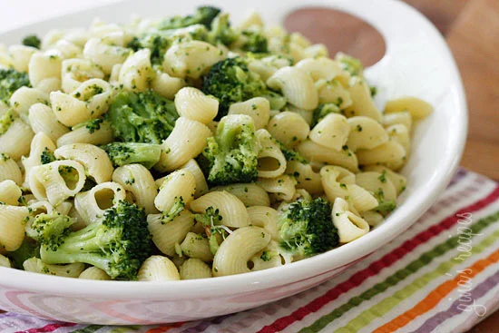

Broccoli Pasta
Home

This nutritous pasta recipe always goes down
a treat.
- Preparation time: 10 minutes
- Cooking time: 15 minutes
Ingredients
- Italian seasoning
- 1 clove of garlic
- Broccoli florette
- Double Cream
- Olive Oil
- Pasta
- Parmesam
- Chilli (for the adults)
- Onion
- Garlic Bread (Optional)
Instructions
- Cook the pasta
- You can begin this step while the shells are cooking. First,
heat the olive oil and butter over medium-high heat in a
large skillet. Then once the butter has melted add the onion
and cook it for about 3 minutes until it’s soft and translucent.
Now, add the minced garlic and cook it for just 30 seconds until
it’s aromatic.
- Next, you’ll need to cook the broccoli before you can make
the sauce. Add the florets to the skillet along with the
Italian seasoning, red pepper flakes, salt, and black pepper.
Then stir everything together and cook the broccoli for
5 minutes or until it softens up a bit.
- After the broccoli is cooked, pour the heavy cream into
the skillet along with 1⁄2 cup of the reserved pasta
water. Then bring the mixture to a boil. Now, turn the
heat down to a simmer and let it cook for 5 minutes or
until the sauce thickens. Finally, add the parmesan
cheese and cooked shells to the broccoli mixture and
toss everything together. Then cook for one more minute
to meld all the flavors.
- Once the shells are fully coated in sauce and the dish
is complete, transfer the creamy broccoli pasta to your
serving dish of choice. Then garnish it with some more
freshly grated parmesan cheese and serve with some of my
yummy Garlic Bread if you like.